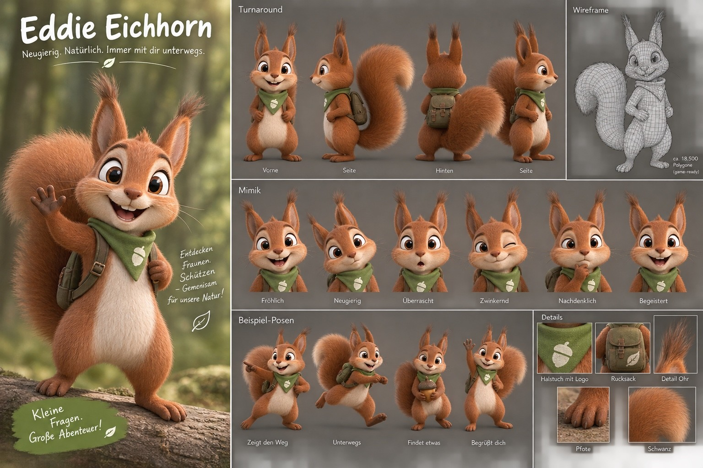

Empfehlung: mindestens 12 × 12 cm ausdrucken
Empfehlung: mindestens 12 × 12 cm ausdrucken
EDDIE BEGLEITET DICH
Neugierig. Natürlich. Immer mit dir unterwegs.
Dieser Prototyp verbindet die Eddie-Figur mit einer markerbasierten Web-AR-Anwendung. Er funktioniert direkt im Browser – ohne App-Installation.
Hinweis: Für die Kamera benötigt die AR-Seite HTTPS. Lokal funktioniert sie in der Regel über localhost, nicht beim direkten Öffnen als Datei.